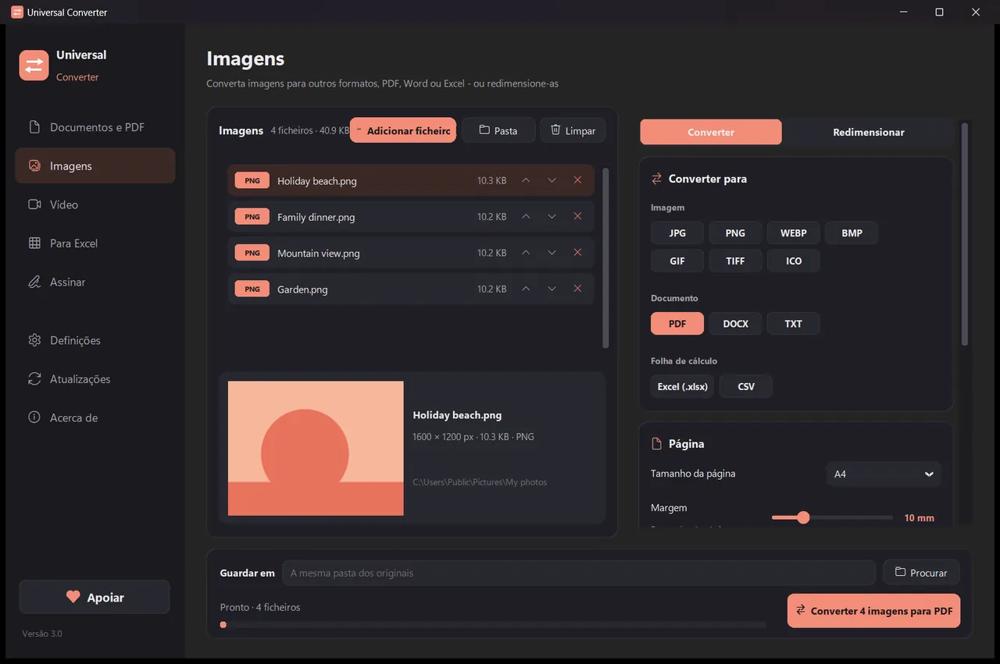
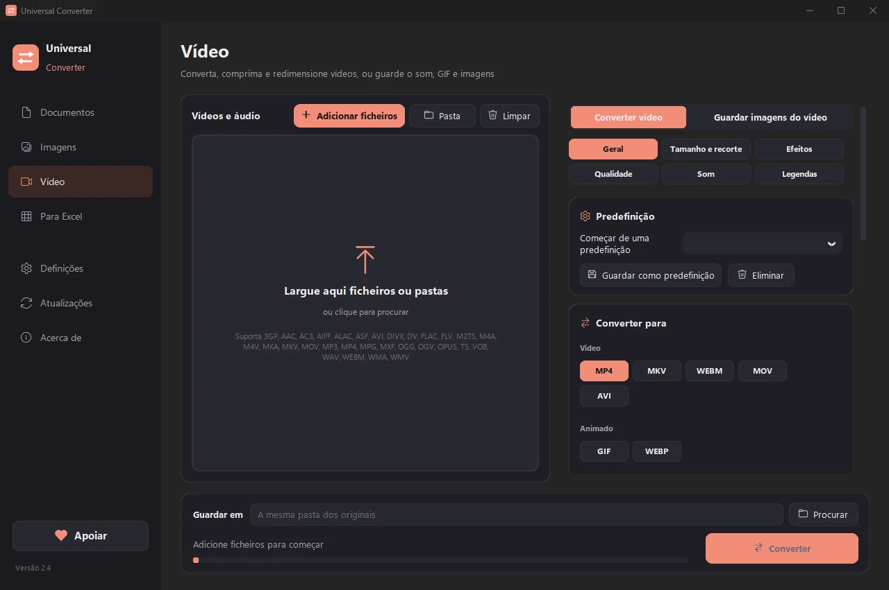
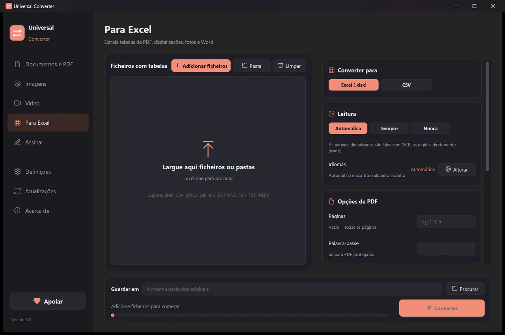

Converta os seus ficheiros no seu próprio dispositivo
Imagens, documentos, vídeo e áudio, PDF e tabelas para Excel, tudo numa só aplicação. Nada é enviado: os seus ficheiros nunca saem do seu dispositivo.
Como instalar e atualizar
- Abra o .dmg descarregado e arraste o Universal Converter para Aplicações.
- Abra a app. Da primeira vez, o macOS bloqueia-a porque não está assinada pela Apple: clique em OK.
- Abra Definições do Sistema > Privacidade e segurança, desça, clique em «Abrir mesmo assim» e introduza a sua palavra-passe. Só é preciso fazer isto uma vez.
Atualizações: se o permitir quando a app abre pela primeira vez, ela procura novas versões sempre que inicia, verifica a assinatura digital e instala-as quando escolher.
Como instalar e atualizar
- Toque em «Transferir para Android» no seu telemóvel.
- Abra o ficheiro transferido. Se o Android pedir, permita que o navegador ou o gestor de ficheiros instale apps.
- Toque em Instalar.
Atualizações: a app verifica cerca de uma vez por dia e avisa quando há uma nova versão. Transfira-a da mesma forma e instale-a por cima da antiga; as suas definições mantêm-se.

Privado
Tudo acontece no seu dispositivo. Sem envios, sem filas de espera, sem limites de tamanho.
Gratuito
De utilização gratuita, sem anúncios, sem conta e sem marcas de água.
10 idiomas
Português, inglês, grego, espanhol, italiano, alemão, francês, chinês, japonês e coreano.
Quatro ferramentas numa janela

Documentos
Converta entre PDF, Word, ODT, RTF, TXT, Markdown, HTML, EPUB, PowerPoint e Excel. Transforme páginas em imagens e junte vários ficheiros num PDF. Tipos de letra, tamanhos e cores mantêm-se.
Imagens
Converta entre JPG, PNG, WEBP, TIFF, BMP, GIF e ICO. Redimensione em píxeis, percentagem ou tamanho do ficheiro, junte imagens num PDF ou Word e leia o texto das imagens (OCR). Também aceita PDF: cada página torna-se uma imagem.

Vídeo
Converta vídeos entre MP4, MKV, WebM, MOV e AVI, e comprima-os, com AV1, H.265, H.264 ou VP9. Corte, recorte, rode e redimensione, crie GIF, guarde imagens do vídeo ou fique só com o som em MP3, M4A, FLAC, WAV, OGG ou Opus. No Android: MP4 ou MKV com H.264 ou H.265; cortar, recortar, rodar, redimensionar, guardar imagens do vídeo ou o som em M4A.

Para Excel
Passe tabelas de PDF, digitalizações e fotos para Excel ou CSV: extratos bancários, faturas, tabelas de preços. Lê português, inglês, grego e mais de 30 outros idiomas.
- Usa a placa gráfica para o vídeo quando pode: normalmente 5 a 20 vezes mais rápido.
- Arraste pastas inteiras: todos os ficheiros são convertidos de uma só vez.
- Avisa quando um ficheiro pertence a outro separador e leva-o para lá com um clique.
- Avisa quando há novas versões; no Windows e no Mac pode instalá-las por si, verificadas digitalmente.
- Aspeto claro ou escuro, como o seu dispositivo.
Como funciona
- Abra o Universal Converter e escolha Documentos · Imagens · Vídeo · Para Excel à esquerda.
- Arraste os ficheiros ou uma pasta inteira para a janela, ou clique em Adicionar ficheiros.
- Clique em Converter. Os novos ficheiros são guardados junto dos originais ou na pasta que escolher.
O que faz
- Converter um PDF para Word
- Converter documentos Word para PDF
- Juntar vários ficheiros num PDF
- Converter páginas de PDF em imagens JPG
- Transformar um documento digitalizado num Word editável
- Converter imagens entre JPG, PNG, WEBP e mais
- Redimensionar imagens ou reduzi-las a um tamanho de ficheiro
- Juntar fotos num só PDF
- Copiar o texto de uma imagem (OCR)
- Comprimir um vídeo sem o enviar
- Converter vídeos entre MP4, MKV, WebM, MOV e AVI
- Guardar o som de um vídeo em MP3
- Criar um GIF a partir de um vídeo
- Passar tabelas de um PDF para Excel
- Converter um extrato bancário em PDF para Excel
- Extrair tabelas de faturas PDF para Excel
Perguntas
É mesmo gratuito?
Sim. O Universal Converter é de utilização gratuita, sem anúncios, sem conta e sem limite de tempo. Se lhe for útil, pode apoiar o desenvolvimento com uma contribuição voluntária, mas nunca é obrigatório.
Os meus ficheiros são enviados para algum lado?
Não. Cada conversão acontece no seu próprio dispositivo, por isso também funciona sem ligação à internet. A aplicação só se liga para procurar atualizações, para transferir os idiomas extra que escolher e, se o permitir, para enviar relatórios de erros anónimos.
O Windows mostra um aviso do SmartScreen. É normal?
Sim. O instalador ainda não tem assinatura de código, por isso o Windows não o reconhece. Escolha «Mais informações» e depois «Executar mesmo assim». As atualizações seguintes são verificadas digitalmente pela própria aplicação. Ou instale-o a partir da Microsoft Store, que não mostra qualquer aviso.
Como o abro num Mac?
Abra o ficheiro transferido e arraste o Universal Converter para Aplicações. A aplicação não está assinada pela Apple, por isso da primeira vez que a abre o macOS bloqueia-a: clique em OK, depois abra Definições do Sistema > Privacidade e segurança, clique em «Abrir mesmo assim» e introduza a palavra-passe. Só é preciso uma vez.
Como o instalo no Android?
Transfira o APK no telemóvel, abra-o e permita a instalação quando for pedido (Android 10 ou posterior). O inglês e o grego estão incluídos; os outros idiomas transferem-se nas Definições da aplicação. A aplicação avisa quando há uma nova versão.
Em que idiomas está?
A aplicação está em português, inglês, grego, espanhol, italiano, alemão, francês, chinês, japonês e coreano. Escolhe o idioma no instalador ou mais tarde nas Definições.